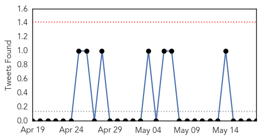
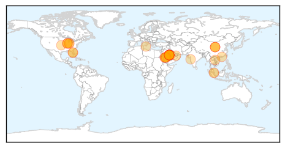

30 Day Trends
Web: 18 alerts, 11 warnings
Twitter: 0 alerts, 0 warnings
Top Articles:
- 1.000
- Illinois resident who had contact with Indiana MERS patient tests positive for virus
- 1.000
- Third U.S. Man Tests Positive for MERS Virus, CDC Reports
- 0.999
- Illinois man tests positive for MERS virus without falling ill
- 0.999
- MERS may have spread from person to person in US
- 0.999
- No special Mers warning for airport
- 0.999
- Three cases in U.S., but risk of MERS low in Canada, agency says
- 0.999
- Illinois man tests positive for MERS virus without falling ill
- 0.999
- Third case of MERS confirmed in US
- 0.999
- US confirms third case of MERS virus revealed in ongoing investigation
- 0.999
- First US MERS case spread disease
- 0.999
- Middle East Virus Identified in Third U.S. Patient, CDC Says
- 0.999
- Illinois man tests positive for MERS virus without falling ill
- 0.999
- Disease Cross US Border Airports Alerted
- 0.999
- CDC: First case of MERS infection transmitted inside the U.S.
- 0.999
- DH closely monitors a suspected case of MERS in United States
- 0.998
- First U.S.-Transmitted MERS Case
- 0.998
- CDC: Illinois man is 3rd reported case of MERS in nation
- 0.997
- Illinois Man Is Third U.S. MERS Infection, CDC Says
- 0.997
- Third Case Diagnosed in U.S.
- 0.997
- MERs toll rises to 168 in Saudi Arabia
- 0.997
- Newest U.S. MERS patient was infected by Indiana victim, CDC says
- 0.997
- CDC reopens SARS playbook from 2003
- 0.997
- Illinois man tests positive for MERS virus without falling ill
- 0.995
- the edge of knowledge
- 0.994
- SAUDI MERS DEATHS HIT 168; US HAS 3RD CASE
- 0.993
- CDC: Illinois man is third U.S. MERS infection
- 0.992
- MERS Economic Impact
- 0.991
- Medics could take Mers global
- 0.990
- Saudi Arabia reports 2 more MERS coronavirus cases
- 0.980
- Saudi Reports Five New MERS Deaths
- 0.979
- MERS Watch: Secondary Infection in U.S.?
- 0.964
- MERS not a global threat, says report
- 0.961
- Foreign doctors, nurses in Saudi Arabia could take MERS global
- 0.956
- MERS Coronavirus Cases Affected 2 More In Saudi Arabia
- 0.955
- Kissin’ Camels by Aussie Dave
- 0.946
- Health D-G: Woman dies on flight from Jeddah to KL
- 0.796
- MERS Transmitted In The U.S. For The First Time
- 0.558
- MERS temperature screening starts at Changi airport
Top Tweets:
-
No tweets found for May 18, 2014
Web/News Articles

Tweets
Article Locations
Article Confidences